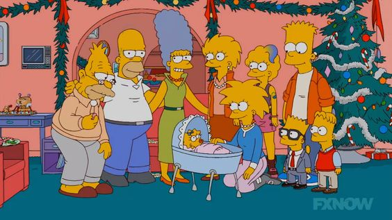

The Simpsons sports a vast array of secondary and tertiary characters.
Cras justo odio, dapibus ac facilisis in, egestas eget quam. Donec id elit non mi porta gravida at eget metus. Nullam id dolor id nibh ultricies vehicula ut id elit.
The Simpsons sports a vast array of secondary and tertiary characters.
Cras justo odio, dapibus ac facilisis in, egestas eget quam. Donec id elit non mi porta gravida at eget metus. Nullam id dolor id nibh ultricies vehicula ut id elit.

Simpsons Family
{kind=link}
{kind=link}
Details
The Simpsons is an American animated sitcom created by Matt Groening for the Fox Broadcasting Company. The series is a satirical depiction of working-class life, epitomized by the Simpson family, which consists of Homer, Marge, Bart, Lisa, and Maggie. The show is set in the fictional town of Springfield and parodies American culture and society, television, and the human condition.
- TheSimpsons.com
{kind=link}
This Simpsons Family.
The Simpsons is known for its wide ensemble of main and supporting characters (ensemble cast).
The family also owns a dog, Santa's Little Helper, and a cat, Snowball V, renamed Snowball II in "I, (Annoyed Grunt)-Bot". Both pets have had starring roles in several episodes.
{kind=link}
This Simpsons Characters.
The main characters are the Simpson family, who live in a fictional "Middle America" town of Springfield. Homer, the father, works as a safety inspector at the Springfield Nuclear Power Plant, a position at odds with his careless, buffoonish personality. He is married to Marge Bouvier, a stereotypical American housewife and mother. They have three children: Bart, a ten-year-old troublemaker and prankster; Lisa, a precocious eight-year-old activist; and Maggie, the baby of the family who rarely speaks, but communicates by sucking on a pacifier. Although the family is dysfunctional, many episodes examine their relationships and bonds with each other and they are often shown to care about one another. Homer's dad Grampa Simpson lives in the Springfield Retirement Home after Homer forced his dad to sell his house so that his family could buy theirs. Grampa Simpson has had starring roles in several episodes.